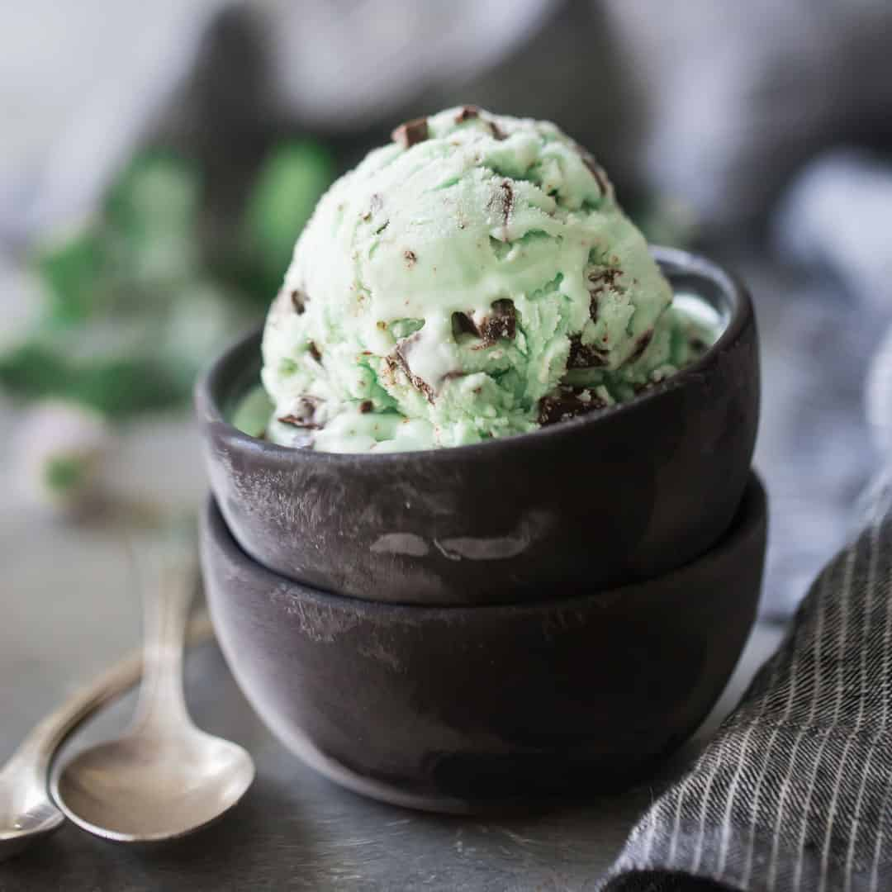
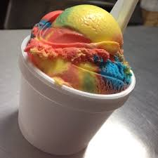
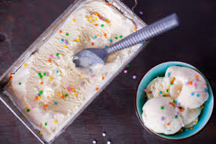
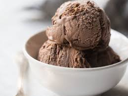
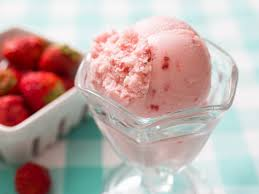
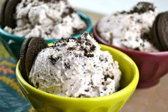
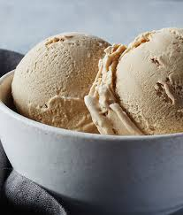

Mint Chocolte Chip
This is my go to ice cream from any store I go to. This would always be my go to unless I wanted to try and switch it up!
Learn how to make mint chocolate chip ice cream

Cookie Dough
This flavor really depends on where you get it. You have to find a place where they have big chunks of cookie dough mixed in.
Learn how to make cookie dough ice cream

Superman
Whenever I go to the beach I make sure to get this flavor. It tastes like vanila but you get it for the color alone.
Learn how to make superman ice cream

Birthday Cake Batter
This is an ice cream you can only eat if you are not full. This ends up to be a very filling flavor and can make you sick if you eat too much.
Learn how to make birthday cake batterr ice cream

Chocolate
This is just a clasic flavor that we normally have in our freezer. The richer the chocolate the tastier it will be.
Learn how to make chocolate ice creamm

Strawberry
This is the flavor I go to when I am trying to be healthy. Culvers has the best strawberry ice cream I have ever had.
Learn how to make strawberry ice cream

Oreo
This was my favorit flavor growig up as a kid. I would get this andd ice cream as well as milkshakes everywhere we went.
Leearn how to make oreo ice cream

Coffee
I have recently started to become interested in this flavor. I tried it for the first time over quarantine and I love it.
Learn how to make coffee ice cream

Vanilla
This is just such a classic flavor. This is one you can get anytime and anywhere.
Learn how to make vanilla ice cream